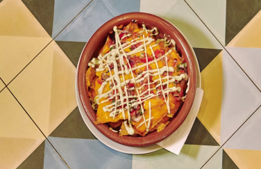
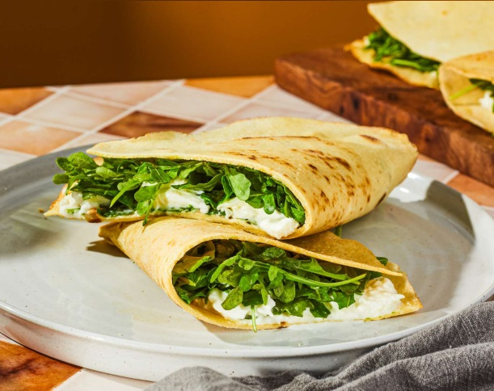
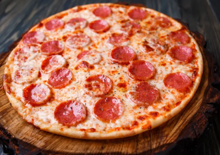
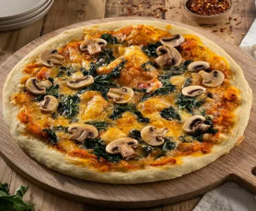
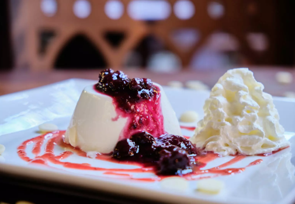

Nuestros platos de entrada disponibles.
Nachos mejicanos acompañados con pico de gallo, salsa de queso Cheddar y Guacamole.
Precio: $4.500
Piadina italiana, se presenta como un pan plano cocinada con manteca de cerdo y carne de vacuno
Precio: $3.500
Nuestros platillos principales disponibles.
Pizza de pepperoni hecha con masa fresca y crujiente, salsa de tomate italiana y una generosa cantidad de pepperoni rebanado en cada porción.
Precio: $7.000
Pizza de champiñones hecha con ingredientes recogidos localmente y con una receta casera hecha por nuestros mismos chefs
Precio: $7.500
Nuestros postres disponibles.
Postre elaborado a partir de crema de leche, azúcar y queso crema, adornado con mermelada de frutas rojas.
Precio: $5.500
